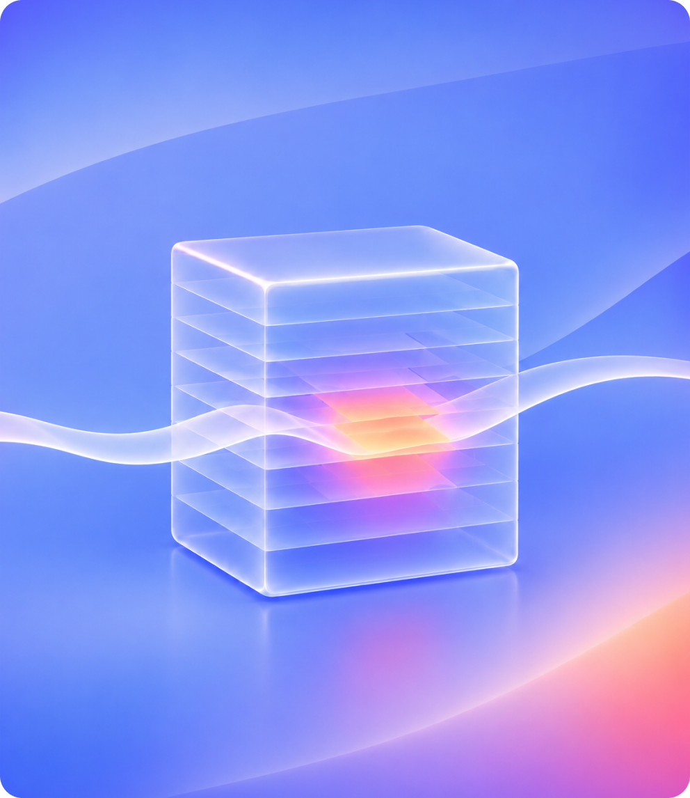
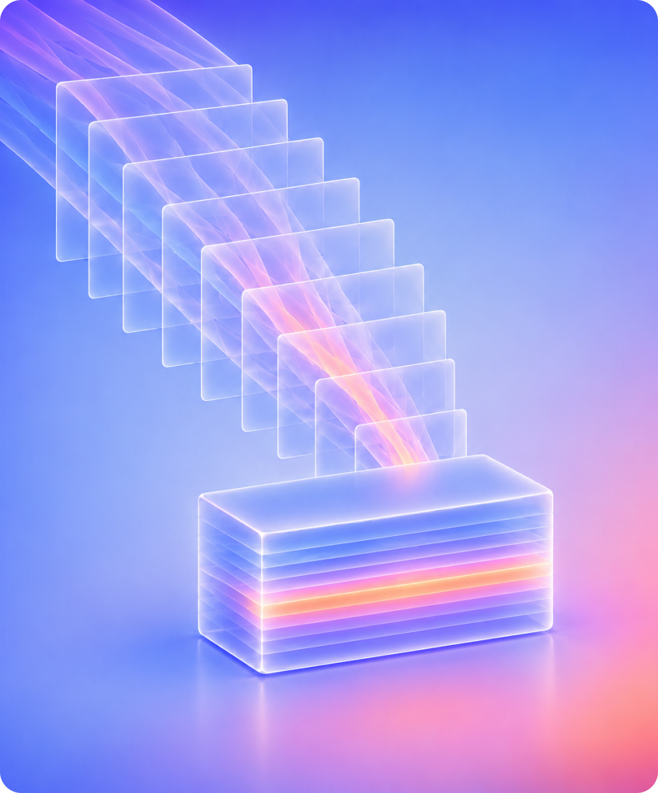
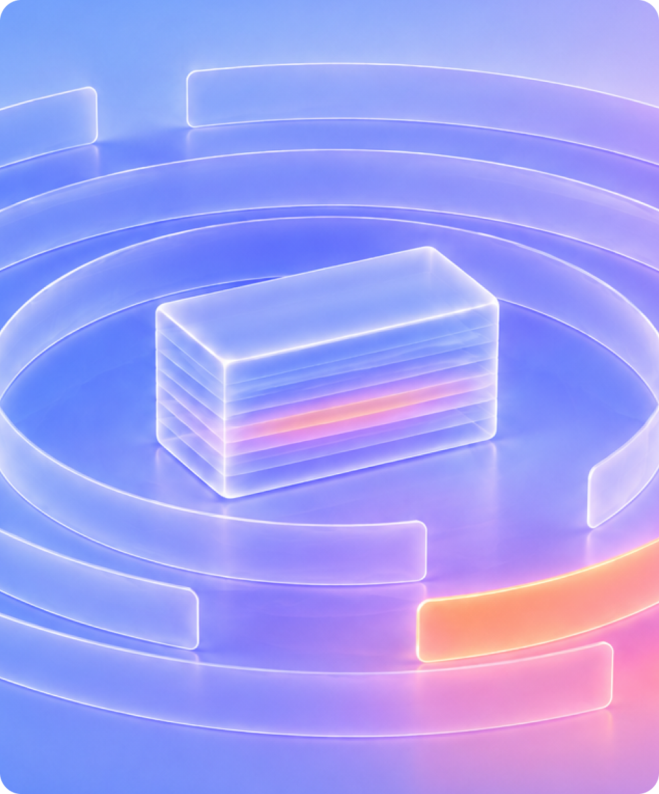
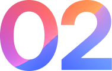

Why Artemis
Artemis models your environment first, then detects, investigates and responds against that model directly.
A fundamentally different approach to attain the highest visibility to detect and fastest response to stop machine speed attacks.
Environment Intelligence
A living model of every user, account, device, resource and AI agent you run, applied at detection time rather than looked up afterward.
Adaptive detection
Detectors written for your environment in minutes, then auto-tuned continuously so coverage does not decay.
The decision-grade case
Cases arrive already investigated: a judgement, the evidence chain behind it, and response actions staged and waiting.
01 - Environment Intelligence
Artemis knows what is expected for every user, account, device and AI agent you run.
The attacker can research the exploit. What the attacker cannot know from outside is what is expected inside your organization. That knowledge is the defender’s one durable advantage, and Artemis is built to leverage it.

What it is
A living model of every user, account, device, resource and AI agent in your organization, and the relationships between them: what each is supposed to do, what is expected for it, and what it means to the business.
How it is built
From logs and systems that represent your organization: identity providers, HR systems and org structure; CMDB, ITSM and asset management; crown-jewel maps and business context. It updates continuously as the organization changes.
Why it changes detection
The model is applied at detection time, a fundamental distinction vs other offerings. A platform that reaches for context only once something else has raised a flag stays permanently bounded by what others catch. For example, Artemis detects the first-ever access to a sensitive resource because the model already holds the baseline for every entity in scope, whether or not a rule existed for it.
Why it is hard to build
Context retrieval for investigation is achievable, and several platforms do it well. An environmental model that powers real-time detection is significantly harder to build: it has to be populated from authoritative sources rather than inferred from alerts, and wired into detection logic from the foundation. That is a decision made at the start of building a platform, not one added to a roadmap.
❯Ask how the context was built. From your systems of record before anything happens, or accumulated from past investigations?
At Cursor, Artemis maps which automation accounts touch production, how developers reach infrastructure, and what routine data movement looks like — across an environment whose infrastructure changes by the hour. Read the full story
02 - The decision-grade case
Cases arrive already investigated, with the evidence chain attached and response staged.
Most platforms deliver an alert and the investigation starts there. Artemis delivers the finished investigation, and the decision starts there.

What arrives
One case per actor, not five alerts across five consoles. Identity, cloud, endpoint, AI and SaaS activity resolved to a single entity and assembled into one narrative. A clear explanation of what happened. A judgement, with confidence. The full evidence chain behind it. Response actions staged and waiting on your approval.
Why it can be trusted
Every verdict is auditable. The reasoning chain, the queries the agent ran, and the evidence behind each conclusion ship with the case. An autonomous investigation is only useful if a security team can put weight on it. Showing the work is what makes the difference between a system that saves time and one that has to be checked, which saves none.
Where response fits
Because Artemis owns detection, investigation and the case end to end, it can close the loop to containment. Response actions can run autonomously the moment you enable them, with human approval retained wherever you want it. The level of autonomy is a setting you control, not a vendor default.
What it does to the day
Your team stops reconstructing context and starts making decisions. The work that used to fill an analyst’s shift such as pulling threads across consoles, deciding which events belong together, is now already done when the case opens. What is left is the judgement, which is the part that needed a person all along.
❯Does the case tell your analyst what happened, or what to do?
Cursor investigates every alert generated across more than 10 billion events a day. 96% close without human involvement, leaving the team the handful of cases that need a decision.
03 - Adaptive detection
Artemis writes detectors for your environment and keeps them tuned itself.
Detection coverage that depends on a person maintaining it decays from the day it is written. Artemis writes detectors for your environment and keeps them current itself.

How coverage starts
Comprehensive MITRE ATT&CK coverage, maintained by the Artemis research team, and validated against real environments. That is the foundation every customer has on day one. Behavioral analytics layer on top, grounded in what is expected for each specific entity in your environment rather than what is average across everyone’s.
How coverage adapts
New threat intelligence, from a feed, a published report, or behavior Artemis observes, flows into the Environment Model. Artemis synthesizes detectors against your specific environment in a handful of minutes, scored for quality and proposed for your approval. Detection engineering shifts from authoring to supervision.
How coverage stays current
Detectors tune themselves continuously as the environment shifts. This is the part that compounds over a contract term: a static rule set written for last quarter’s org chart is already wrong, and nobody has time to revisit it. Auto-tuning is why false positives fall rather than accumulate.
You keep control
Your engineers can author custom detectors in plain language through AI Mode or the Artemis MCP, with versioning, audit history, one-click rollback and your own repository as the source of truth. Nothing about this is a black box, and nothing requires you to write SPL, KQL or SQL.
❯Ask who writes the detections and who keeps them current. A library you tune forever, or detectors generated and tuned against your environment?
Cursor runs thousands of detectors continuously tuned to its environment, correlating more than 20 log sources. New sources onboard by pointing Artemis at them — no hand-written parsers.
Only Artemis
Each capability depends on the one before it.
The model is what makes the detection possible, the detection is what makes the case possible, and the case is what makes autonomous response defensible.
The model enables the detection
Detectors written for your environment require knowing what is expected in it. Without the model, a platform can generate generic rules quickly, which is the problem rather than the solution.

The detection enables the case
A platform that does not own detection cannot own the case. It is reasoning about an alert whose underlying logic the upstream vendor never exposes.
The case enables the response
Containment requires a judgement you can act on. A verdict without an evidence chain is not something a security team will let run autonomously, and it shouldn’t be.
One architectural decision, made at the start: model the environment first, and build detection on top of it. Everything on this page is downstream of that.
What it delivers
Faster operations. Better protection. Higher savings.
Real customer outcomes, measured against what the same teams were running before Artemis.
Faster operations
96%
Reduction in mean time to resolution.
Better protection
95%+
Reduction in false positives.
Higher savings
30/days
First-year cost recovered in the initial 30 days.
Getting there
Complement or replace your legacy SIEM, at the pace you choose.
Artemis adds a brain on top of the operational surface your team has already built. It can replace or integrate with your case management system, the chat tool they live in, or the automation they have invested in. It becomes the source of better-quality work flowing into all of them.
❯Week One
Artemis connects to your existing SIEM, data pipeline or data lake and queries what is already there. Connectors live in under an hour. Nothing is turned off and nothing is migrated. First cases from your environment inside 48 hours.
❯Months one to six
Detection, investigation and response shift to Artemis while your SIEM continues to hold historical data. Most teams start with one domain, usually identity or cloud, and expand as coverage proves out against their own criteria.
❯At renewal
Some customers keep the SIEM for compliance retention and audit trail. Others move off it entirely, as Cursor did. You make that call having operated both, on evidence rather than on a vendor’s timeline.
FAQ
Coexistence, ingestion, deployment, custom detections, data ownership and consolidation.
No. Artemis connects to your existing SIEM, data pipeline or data lake and runs alongside it. Some customers keep their SIEM for historical data or backup. Others replace it over time. Artemis can complement or replace each piece of your operational surface, at the pace you choose.
Both. Hot-path data that detection depends on is ingested directly, while high-volume sources are queried in place. Endpoint and network telemetry is typically accessed through Search connectors because of the volume, though it can be ingested where a customer prefers. Pure ingestion drives the cost problem that defines the legacy SIEM. Pure federation trades that cost away for latency you cannot afford when an attack moves in seconds.
Connectors are live in under an hour. At one customer, real cases were generated within 1 hour of the proof-of-value kickoff, with connectors running across Splunk, Microsoft Sentinel and SentinelOne inside that window.
Yes. Security engineers author custom detectors in natural language through AI Mode or the Artemis MCP, with versioning, audit history, one-click rollback and your own repository as the source of truth.
Artemis can hold your data up to 7 years. If you’d like to keep the data in your environment, Artemis supports a bring-your-own-storage model, and data you have already centralized stays where it is.
SIEM, UEBA, SOAR automation, detection content libraries, threat hunting tooling, posture management, CDR and ITDR. Each is a separate vendor relationship with its own renewal, so the consolidation savings stack on top of the storage savings and the cost-recovery insights Artemis surfaces from the Environment Model.